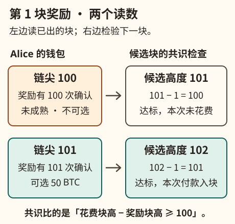
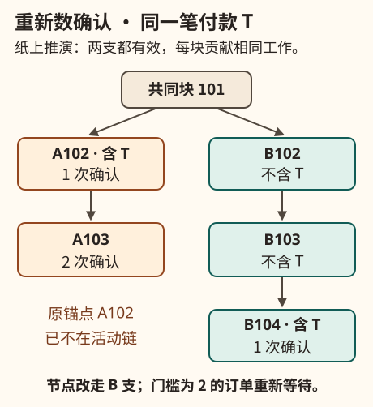

本页目录
先修是 M01，特别是第 04 课的网络核验。这次只连本机的 Bitcoin Core。我们要追两笔不同的交易：先看 Alice 从第 1 块拿到的奖励什么时候能花，再看用这笔钱付给 Bob 的货款什么时候能放行。不要把奖励的 100 次确认抄到货款的回执上。
先取证：用同一次运行留下四组读数
在仓库根目录打开 Bash。需要带钱包的 Bitcoin Core 30.5（bitcoind、bitcoin-cli 都在 PATH）、Python 3.11 标准库和 grep；缺 Core 可先看工具准备。启动入口 bitcoin.sh 调用双钱包付款实验，其临时节点启动器 使用新的数据目录，RPC 只走回环，断开 P2P。不要传自己的地址、钱包或数据目录。装好工具以后可以断网做。
bitcoind --version
bitcoin-cli --version
python3 --version
log=$(mktemp "${TMPDIR:-/tmp}/btc-05.XXXXXX")
bash labs/bitcoin.sh > "$log" && grep -E '^(NODE|MATURITY|MEMPOOL|BLOCK|DEPTH|PASS) ' "$log"
printf '实验日志：%s\n' "$log"
只在脚本成功、日志末有 PASS 时继续；若中断，留下的是不完整的运行，不是「零确认」的证据。保持这个终端开着，后面的 $log 就是刚才那份文件。先核对 NODE：是全新的 regtest、没有对等连接；再看四种行名。MATURITY 的主语是 Alice 的奖励；MEMPOOL、BLOCK 和 DEPTH 跟的是 Bob 的同一笔付款。以你的日志为准；下文给的是默认输入的预期读数，不是供复制提交的实跑记录。
已经挖到的 50 BTC，怎么会「余额有、却选不到」？
区块的第一笔交易叫 coinbase，它没有用普通输入去花某人的旧钱。它的输出可以领取两部分：补贴是按该链规则和块高允许新发行的钱，手续费是本块普通交易的输入金额减输出金额的差额之和，来自已有的钱。矿工可以少领，不能超领。一个没有普通交易的块照样需要 coinbase，能领补贴，手续费是零。
脚本用 generatetoaddress 出第 1 块，把奖励指定给 Alice；从第 2 块起奖励都去独立的 miner 钱包。于是 Alice 此时只有一笔待跟踪的收入：第 1 块补贴 50 BTC = 5,000,000,000 sat，没有别的付款混在里面。为什么不让她收到它立刻去付钱？如果第 1 块被另一条分支取代，这笔凭它产生的奖励就没有了。让 coinbase 输出先等一段，避免刚产生的奖励立即带出一串依赖它的付款；等待不保证这个块永远不会被替换。
读日志的三行 MATURITY。gettransaction 查的是奖励交易；getbalances 把 Alice 的未成熟收入和可信余额分开，lastprocessedblock.height 表明这个钱包读数对应的块高。listunspent 默认不列未成熟的奖励；这里把返回的输出个数记为 selectable。1 BTC 有 100,000,000 sat，金额列都是整数聪，不是 BTC 小数。
| 钱包处理到的高度 | 奖励确认数 | 未成熟 immature_sat |
可信 trusted_sat |
可选输出个数 |
|---|---|---|---|---|
| 1 | 1 | 5,000,000,000 | 0 | 0 |
| 100 | 100 | 5,000,000,000 | 0 | 0 |
| 101 | 101 | 0 | 5,000,000,000 | 1 |
为什么在 100 这一行看到 100 次确认，仍然没有可选的输出？先分清题目里的两个高度：钱包读的是链尖上已经发生的历史；共识规则是在检查「把花费写进某个候选块行不行」。下面的右栏只检查成熟度，还没代替签名等其他检查。


对奖励所在高度 b，包含花费的候选块高度 s 必须满足 s − b ≥ 100。在本例，写进 100 号块只差 100 − 1 = 99，共识不许；写进 101 号块差 101 − 1 = 100，这一条规则准许。可是脚本在链尖 100 调 Core 钱包默认查询时，奖励深度是 100 − 1 + 1 = 100，仍列在未成熟项。实验没有往 101 号块里塞花费：先出完这块，钱包在深度 101 才列出那枚输出，Alice 随后签普通付款，实际进入 102 号块。共识的最早高度、钱包何时给出候选输入、这次付款在哪块，是三个不同答案。普通付款的收款输出没有这条 coinbase 专属成熟期。
谁有权把 Bob 的付款写进第 102 块？
Alice 的付款用未花费输出（UTXO，相当于凭 txid 和输出序号能找到的一笔旧款）作输入。签完后，脚本先预检，再用 sendrawtransaction 交给节点。此刻 getmempoolentry 能按付款 txid 查到本节点内存池中的记录；Bob 的 gettransaction 却是 confirmations=0。这两项并不矛盾。把它们交给三个不同的人问：
| 谁在判断 | 能决定什么 | 不能保证什么 |
|---|---|---|
| 本节点的内存池 | 按当前已知输入、共识要求和本地接纳策略，是否暂存、转发这笔交易 | 别的节点一定也有它、一定轮到它、它不会被逐出 |
| 构造候选块的矿工 | 在区块空间等限制内选择交易；有依赖的交易需按可验证顺序放入。可考虑整组交易的费用与占用空间，也可不收这笔 | 不能因为手续费高就接受错误签名，或在同一条链上再花一次已花的输入 |
| 收到块的全节点 | 独立验块：父块及难度目标、工作量证明、区块承诺和重量、输入可用与花费条件、金额与奖励上限等 | 不会仅因自己从未在内存池见过某笔交易，就宣布含它的块无效 |
所以，MEMPOOL 的 bob_pending_sat=125000000 是 Bob 钱包看见的待确认款；既非其他节点的承诺，更非付款人购得的排队号。为什么矿工愿意收这笔？本例付款给出 1,000 sat 手续费。如果高度 102 的块除了 coinbase 只打包这笔，在这个 regtest 高度，矿工最多可领 5,000,000,000 + 1,000 = 5,000,001,000 sat。这是按实验输入推算的上限，不是本课日志打印的矿工余额。在这笔费用之上再领 1 sat，全节点就应拒绝这个块。补贴取决于网络和高度，不要拿这里的 50 BTC 当成当前主网的常数。
两个矿工都找到了块，凭什么相信其中一个？
矿工尝试不同的 80 字节块头，直到其双 SHA-256 哈希按整数解释不大于该块规定的目标。节点会核对目标符合难度规则，矿工不能自己把门槛调松。父块哈希也在块头里，旧块改变，后面的链就不能原样接上。难找、好验的这种凭据叫工作量证明（PoW）。它不会告诉你这位矿工究竟尝试了几次。
做个纸上缩小模型：假设一次哈希均匀落在 0..255。目标 31，合格值有 32 个，每试一次成功概率 32/256，平均要试 8 次；目标 15 只剩 16 个，平均要试 16 次。即使某个矿工第一次就成功，块的工作量仍取决于目标，不是实际耗时，也不是哈希碰巧小到什么程度。Bitcoin 用 256 位哈希，原理相同。把各块由目标折算的工作量累加，就有了 getblock 返回的 chainwork（十六进制）。
节点在自己验证为有效的分支中选择累计工作量最大的，而不数支持的机器、也不单比块高；累计工作相等时，不同节点可能暂时采用不同链尖。相同难度下分支多一块意味着多一份工作，所以在本课简单场景里数块是有用的。regtest 把找块变得容易，generatetoaddress 才能按实验节奏得到块；同一台机器等到了两块，并不能量出主网重组概率或推算准确等待分钟数。
从内存池、包含块，走到放货门槛
现在把注意力从奖励交易换回 MEMPOOL.txid 指出的付款交易。对于仍在活动链中、收录于高度 h 的那一笔，在观察到的链尖高度 H，确认数是 H − h + 1。只有先证明「那块现在还在这条链上」才能代数；仅给一串高度，不给块哈希，算式不成立。
| 找哪行 | 这次实际要找的证据 | 默认门槛 2（预期） |
|---|---|---|
MEMPOOL |
按本次 txid 查到池项；收款钱包报 confirmations=0 |
HOLD：待打包，不是付款失败 |
BLOCK |
height=102，getblock 的交易列表确实含该付款；钱包回执指向这个块的 hash，confirmations=1 |
HOLD：已入块，深度还不够 |
DEPTH |
同一笔付款仍在 102；链尖 height=103，钱包报 confirmations=2 |
RELEASE：这张订单满足深度条件 |
注意第 103 块没有「再付一笔」。它接在第 102 块后面，因此计数为 103 − 102 + 1 = 2。这不是 Bob 又收了 125,000,000 sat。第 06 课会核对收款输出和两端流水；这里的放行示例以款项已匹配这张订单为前提，只演示深度门槛。
改变一个输入，不重跑付款。 继续在刚才的 Bash 里执行下段。它读同一个 $log，先用约定的默认门槛 2，再只把门槛改成 3。程序从你实际运行的每一行取 confirmations，不是靠标签猜深度；若不具备三次观察或付款实验没跑完，就不给判断。
for required in 2 3; do
python3 - "$log" "$required" <<'PY'
import sys
from pathlib import Path
log, required = Path(sys.argv[1]), int(sys.argv[2])
lines = log.read_text().splitlines()
observations = []
for line in lines:
tag, _, rest = line.partition(' ')
if tag in ('MEMPOOL', 'BLOCK', 'DEPTH'):
fields = dict(word.split('=', 1) for word in rest.split() if '=' in word)
observations.append((tag, int(fields['confirmations'])))
if [tag for tag, _ in observations] != ['MEMPOOL', 'BLOCK', 'DEPTH'] or not any(
line.startswith('PASS ') for line in lines):
sys.exit('记录不完整：停止判断')
for tag, depth in observations:
state = 'RELEASE' if depth >= required else 'HOLD'
print(f'{tag} confirmations={depth} required={required} {state}')
PY
done
末次观察的预期分别是 DEPTH confirmations=2 required=2 RELEASE 和 DEPTH confirmations=2 required=3 HOLD。两轮中 BLOCK 都应为 HOLD。门槛变高不会改变一个块、重签交易或拒收这笔钱；改变的是仓库此刻是否应放货。两个门槛均为教学约定，非协议建议。现实订单还要核对网络、收款输出、金额以及是否已经入过同一张单。
若第 102 块不再是活动链的一部分
下图是纸上重组，不在上面的单节点实验中制造分叉。A、B 的 102 都是有效块，却有不同的块哈希。假设从共同块 101 起每块贡献相同工作；先采用 A 链，后来 B 链累计工作更大，节点断开旧分支并连接新分支，这叫重组（reorg）。图中同一笔付款 T 在新分支晚了两个高度才被收录。


切换后 104 − 104 + 1 = 1：T 仍是那笔 T，但在新链上只达到一次确认；门槛 2 的订单要重新等待。若新分支根本未收录 T，就不能把已失效的 A102 当锚点继续累加。原交易可能重新进入本地内存池，也可能因冲突等原因不再可接纳；不要把「离开旧块」自动记成「现在已在池中」。按块哈希查 getblock，旧块不在活动链时其 confirmations 为 -1；这是块的读数。钱包 gettransaction 的负确认则表示交易冲突，不是所有重组都会给交易这个值。
给 Java 服务留证时，至少存网络、付款 txid 和输出序号、包含块哈希与高度、观察时的链尖和门槛；块发生变化，就按新链复核。不要把 confirmed=true 写成一个永不更新的订单字段，也不要因为重新看到同一输出，就重复记一笔收款。已经发出的包裹不能靠改数据库撤回，应该保留旧判断、停止尚未执行的放行并交异常处理。确认越深意味着替换该段通常需要越多工作，不意味着到了某个整数之后协议宣布不可逆。
独立作业：替接班人判一张延迟放货单
交两张小单。第一张取自本次日志：抄下 MEMPOOL 的付款 txid、BLOCK 的完整块哈希、高度与 DEPTH 的链尖高度，把门槛分别写成 2 和 3，各给一句能发或暂缓的理由。再抄高度 100 的奖励可选数，说明为什么它不能证明「第 101 块共识禁止花第 1 块的奖励」。留存本地日志即可，不导出钱包或认证 cookie。
第二张不要用实验里的高度。新工单，纸上输入：门槛是 3；旧活动链的 210 号块收录了已匹配金额的普通货款，旧链尖是 212。接班时节点已切到另一条有效分支，同一货款在新分支的 212 号块被收录，新链尖为 213。写出切换前、后的确认数和放行状态，以及不该重发的那一个业务动作。
答案判据：第一张必须能追到同一运行的付款和包含块；深度 2 在门槛 2 时放行、在门槛 3 时暂缓；高度 100 的 selectable=0 是钱包当时的视图，不否定 101 − 1 = 100。第二张应分别算出 212 − 210 + 1 = 3、213 − 212 + 1 = 2，即从满足门槛退到暂缓；更新包含块锚点，不重复发货。如果写成 213 − 210 + 1，混用了两支的高度。
协议与 RPC 原文
- Bitcoin Developer Guide · 区块、工作量与分叉：对照块头目标、有效分支和 coinbase 奖励来源。
- Bitcoin Core 30.5 · 共识常量 与输入校验：找
COINBASE_MATURITY和nSpendHeight - coin.nHeight，确认究竟比较哪两个高度。 - getbalances 与 listunspent：对照余额分类、
lastprocessedblock与默认不包括未成熟奖励的查询选项。 - getblock 与 gettransaction：分别查块的
chainwork/confirmations、钱包交易的blockhash/confirmations。网页是 Core 30.0 系列接口说明，实验用 30.5。